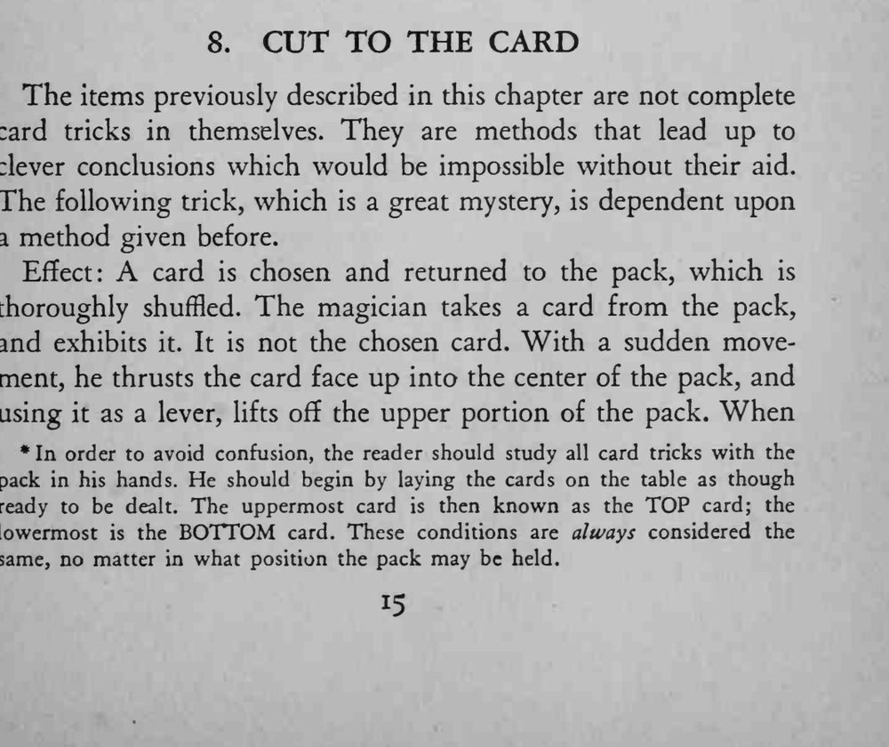
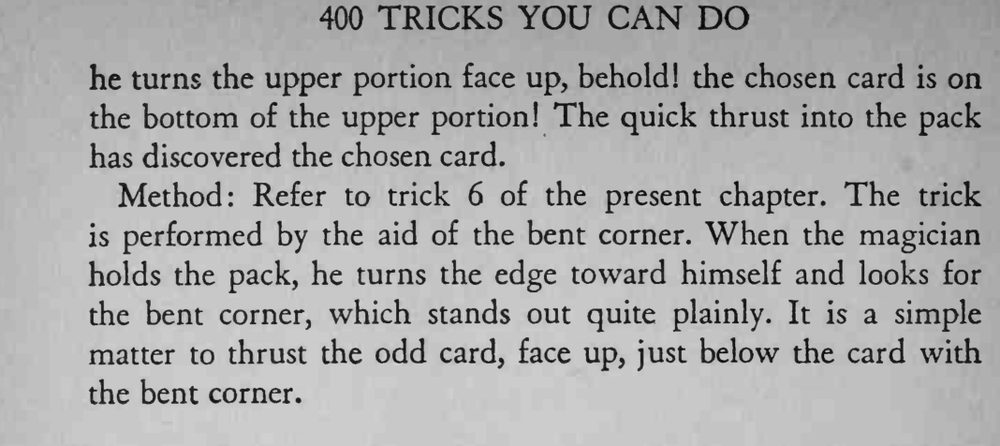

魔术师把一张牌牌面朝上插进牌堆中部，再把它当杠杆一撬，选牌竟然就出现在撬起的那半叠底下。
插牌和撬牌要一气呵成，观众才来不及看清选牌是怎么出现的。


The items previously described in this chapter are not complete card tricks in themselves. They are methods that lead up to clever conclusions which would be impossible without their aid. The following trick, which is a great mystery, is dependent upon a method given before. Effect: A card is chosen and returned to the pack, which is thoroughly shuffled. The magician takes a card from the pack, and exhibits it. It is not the chosen card. With a sudden movement, he thrusts the card face up into the center of the pack, and using it as a lever, lifts off the upper portion of the pack. When * In order to avoid confusion, the reader should study all card tricks with the pack in his hands. He should begin by laying the cards on the table as though ready to be dealt. The uppermost card then known as the TOP card; the lowermost the BOTTOM card. These conditions are always considered the same, no matter in what position the pack may be held. he turns the upper portion face up, behold! the chosen card is on the bottom of the upper portion! The quick thrust into the pack has discovered the chosen card. Method: Refer to trick 6 of the present chapter. The trick is performed by the aid of the bent corner. When the magician holds the pack, he turns the edge toward himself and looks for the bent corner, which stands out quite plainly. It is a simple matter to thrust the odd card, face up, just below the card with the bent corner.